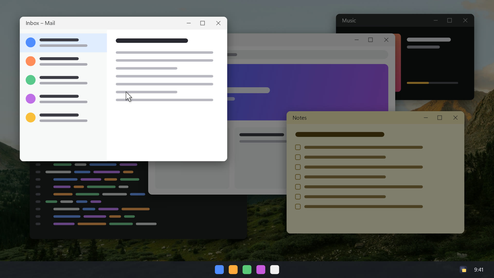
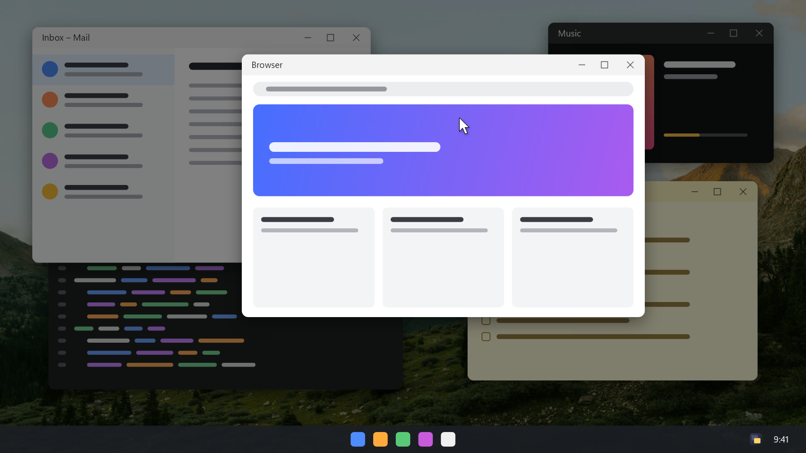
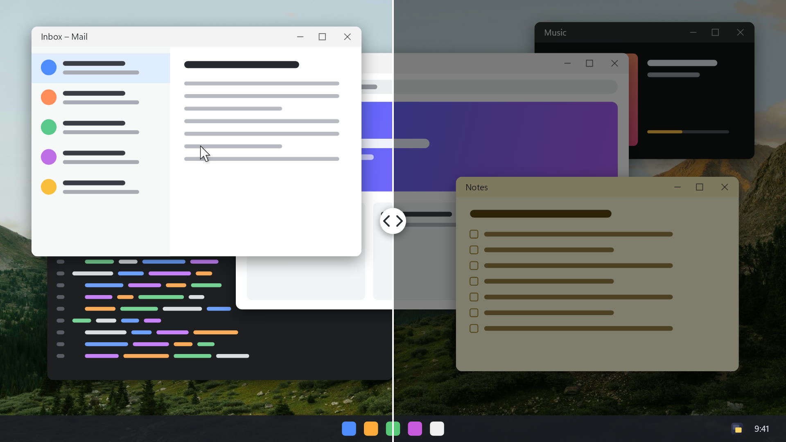
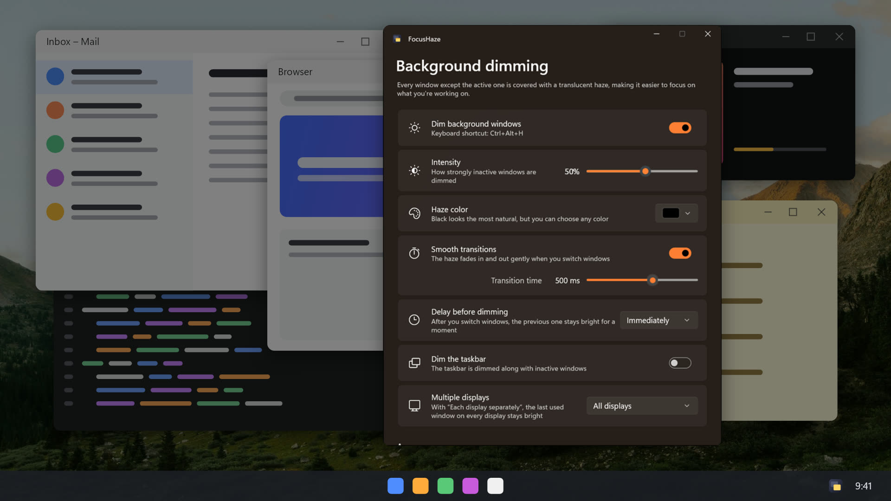

One window.
Full focus.
FocusHaze dims every window except the one you're working in, so the rest of your screen fades into the background.

winget install 9P3J7F0RK3RT
The haze follows your focus.
A translucent haze sits right beneath the active window. Clicks pass straight through it, so you work exactly as before – just with less noise around you.
Dim the rest
Everything except the window you're working in fades into a soft haze: other apps, the desktop, all of it.

Switch, and it follows
Click any window and the haze moves with you. The window you leave fades out smoothly instead of flashing.

Calmer at a glance
Left: a normal busy desktop. Right: the same desktop with FocusHaze. Your eyes go straight to what matters.

Make it yours
Choose how strong the haze is, its color and how fast it follows you. Changes apply instantly.

Small, quiet, everywhere you need it.
FocusHaze runs quietly in your notification area and stays out of your way.
Ctrl+Alt+H
Turn dimming on and off from anywhere.
Click-through haze
It never gets in the way of your clicks.
Every display
Dim all monitors, only the active one, or each one separately.
Starts with Windows
Optional – it starts quietly in the tray.
14 languages
Follows your Windows display language.
Private by design
No data collection, no ads, no network connections.
Languages: English, Polski, Deutsch, Français, Español, Italiano, Português, Nederlands, Українська, Русский, Türkçe, 日本語, 한국어, 中文(简体).
Every option, explained
Open the settings by clicking the FocusHaze icon in the notification area. Changes apply immediately and are saved automatically.
Background dimming
7 options
Dim background windows
Turns the haze on or off. The line underneath shows the keyboard shortcut, or tells you that another app already uses it.
Intensity
How strongly inactive windows are dimmed. Low values give a gentle hint; high values leave the active window almost alone on the screen.
Haze color
The color of the haze. Black looks the most natural. Pick one of the presets (black, navy, brown, dark green, gray) or any color in the color picker, which also takes a hex value.
Smooth transitions
When you switch windows, the window you leave fades into the haze instead of being dimmed at once, while the rest of the screen stays dimmed. Transition time sets how long the fade takes. Turn it off for instant switching.
Delay before dimming
How long the window you leave stays bright after you switch. The new window is bright right away; when the delay runs out, the previous one fades. Switching back before then changes nothing. Handy when you keep glancing between two windows.
Dim the taskbar
Dims the taskbar along with inactive windows, on every display and in any taskbar position. While you use the taskbar, Start or the system tray, it goes back to full brightness.
Multiple displays
How the haze works with more than one monitor:
- All displays: one active window; everything else on every monitor is dimmed.
- Active display only: only the monitor with the active window is dimmed; the others stay as they are.
- Each display separately: every monitor keeps the window you used there most recently bright, so a reference window on your second screen stays readable while you work on the first.
App
3 options
Language
The language of FocusHaze, switched on the fly. System default follows your Windows display language.
Start with Windows
Starts FocusHaze quietly in the notification area when you sign in. If it was turned off in Windows Settings › Apps › Startup, FocusHaze tells you so, and it can only be turned back on there.
Running in the background
Closing the settings window keeps FocusHaze running in the notification area. To stop it completely, click Quit FocusHaze.
Tray icon and shortcut
3 options
Notification area icon
Left-click opens the settings. Right-click opens a menu with Settings…, Dimming (checked while the haze is on) and Quit. Hover over the icon to see whether dimming is on.
Ctrl+Alt+H
Turns dimming on or off from anywhere, just like the first switch in the settings.
Starting it again
Only one copy of FocusHaze runs at a time. Starting it again, for example from the Start menu, opens the settings of the copy that is already running.
Good to know
The desktop
When you click the desktop or press Win+D, the haze is lifted. It comes back as soon as you activate a window.
Memory
Opening the settings or the menu briefly uses more memory. A few seconds after they close, FocusHaze gives it back to Windows and goes back to about 2–4 MB of RAM.
Always-on-top windows
Windows that stay on top of everything else, such as picture-in-picture video, are never dimmed.
Start, Alt+Tab and menus
Opening Start, the task switcher or a context menu doesn’t move the haze; it follows the window you actually switch to.
Questions
Is FocusHaze like HazeOver for Windows?
Yes – FocusHaze brings the same idea to Windows: everything except the active window is dimmed so you can concentrate. It was inspired by HazeOver for macOS, but it's an independent app built natively for Windows 10 and 11.
Can I still click on dimmed windows?
Yes. The haze is click-through: clicking any dimmed window activates it, and the haze moves beneath it.
Does it work with multiple monitors?
Yes. Choose how the haze treats your monitors under Multiple displays in the settings:
- All displays: one window is bright, and everything else on every monitor is dimmed.
- Active display only: only the monitor you're working on is dimmed. The others stay as they are, which suits a video or a dashboard on a second screen.
- Each display separately: every monitor keeps the window you used there last bright, so a reference window on your second screen stays readable while you work on the first.
With Dim the taskbar on, the taskbar on every monitor dims too, wherever you've placed it. When you plug in, unplug or rearrange a display, the haze adjusts by itself.
Does FocusHaze collect any data?
No. It makes no network connections, has no telemetry and shows no ads. Your settings stay on your PC. See the privacy policy.
Will it slow down my PC?
No. FocusHaze is built on plain Windows windows, so dimming costs next to nothing. A few seconds after it starts, or after you close its settings or menu, it gives unused memory back to Windows and uses only about 2–4 MB of RAM in Task Manager.
Why is the download about 60 MB if it uses only 2–4 MB of RAM?
Most of the download is .NET, the runtime FocusHaze is built on. The app carries its own copy, so you don't have to install anything else, and it keeps working when other apps update or remove theirs. The code is also precompiled for your processor, which makes the files bigger but lets the app start faster. The Windows App SDK, the library behind the Windows 11 look of the settings window, is a shared Microsoft package that the Store installs once for all apps that use it. Your PC downloads only the version for its processor (x64 or ARM64).
Download size isn't memory use. While it runs, FocusHaze loads only what it needs and gives the rest back to Windows, so Task Manager shows about 2–4 MB.
Which Windows versions are supported?
Windows 10 version 2004 or later and Windows 11, on both x64 and ARM64 PCs.
Can I install it with winget?
Yes: winget install 9P3J7F0RK3RT installs FocusHaze from the Microsoft Store.
Less noise. More focus.
$0.99, one-time purchase from the Microsoft Store. It updates automatically.